전산응용기계제도기능사 (2007-01-28 기출문제)
1과목: 기계재료 및 요소
1. 탄소강에 함유된 5대 원소는?
- 황(S), 망간(Mn), 탄소(C), 규소(Si), 인(P)
- 탄소(C), 규소(Si), 인(P), 망간(Mn), 니켈(Ni)
- 규소(Si), 탄소(C), 니켈(Ni), 크롬(Cr), 인(P)
- 인(P), 규소(Si), 황(S), 망간(Mn), 텅스텐(W)
(정답률: 69%)

2. Cu 4%, Mn 0.5%, Mg 0.5% 함유된 알루미늄합금으로 기계적 성질이 우수하여 항공기, 차량부품 등에 많이 쓰이는 재료는?
- Y합금
- 실루민
- 두랄루민
- 켈멧합금
(정답률: 77%)
3. 극한강도를 허용응력으로 나눈값을 무엇이라고 하는가?
- 안전율
- 강도율
- 변형율
- 재료율
(정답률: 51%)
4. 다음 중 원주피치 P와 모듈 m과의 관계를 올바르게 표시한 것은?
- P = πm
- P =π/m
- P = 2πm
- P = m/π
(정답률: 51%)
5. 합성수지의 공통된 성질 중 틀린 것은?
- 가볍고 튼튼하다.
- 전기 절연성이 좋다.
- 단단하며 열에 강하다.
- 가공성이 크고 성형이 간단하다.
(정답률: 72%)
6. 황동의 합금 원소는 무엇 인가?
- Cu - Sn
- Cu - Zn
- Cu - Al
- Ci - Ni
(정답률: 77%)
7. 나사의 풀림 방지법으로 적당하지 않은 것은?
- 나비너트를 사용하는 방법
- 로크너트에 의한 방법
- 핀 또는 멈춤나사에 의한 방법
- 자동죔 너트에 의한 방법
(정답률: 63%)
8. 기계 재료에 필요한 일반적인 성질로 틀린 것은?
- 주조성, 소성, 절삭성이 좋아야 한다.
- 열처리성은 떨어지나, 표면처리가 좋아야 한다.
- 기계적 성질, 화학성 성질이 우수해야 한다.
- 재료의 보급과 대량 생산이 가능해야 한다.
(정답률: 81%)
9. 가스 질화법에 사용하는 기체는?
- 탄산가스
- 코크스
- 목탄가스
- 암모니아가스
(정답률: 54%)
10. 전동축의 동력전달 순서가 옳게 된 것은?
- 주축-중간축-선축
- 선축-중간축-주축
- 주축-선축-중간축
- 선축-주축-중간축
(정답률: 44%)
2과목: 기계가공법 및 안전관리
11. 코일스프링의 직경이 30㎜, 소선의 직경이 5㎜ 일 때 스프링 지수는?
- 0.17
- 2.8
- 6
- 17
(정답률: 81%)
12. 피치 3㎜인 2줄 나사의 리드(lead)는 얼마인가?
- 1.5㎜
- 6㎜
- 2㎜
- 0.66㎜
(정답률: 88%)
13. 단면이 고르지 못한 재료에 하중을 가하면 노치의 밑바닥, 구멍의 양끝, 단의 모서리 등에 큰 응력이 발생하는데 이러한 현상은?
- 열 응력
- 피로 한도
- 분산 응력
- 응력 집중
(정답률: 60%)
14. 주철의 성질을 가장 올바르게 설명한 것은?
- 탄소의 함유량이 2.0% 이하이다.
- 인장강도가 강에 비하여 크다.
- 소성변형이 잘된다.
- 주조성이 우수하다.
(정답률: 60%)
15. 다음 중 직접 동력을 전달하는 장치에 해당하는 것은?
- 벨트
- 체인
- 기어
- 로프
(정답률: 75%)
16. 공작기계의 기본운동에 해당되지 않는 것은?
- 절삭운동
- 치핑운동
- 이송운동
- 위치조정운동
(정답률: 72%)
17. 선반 복식공구대의 테이퍼 절삭에서 일감의 큰지름 D(mm), 작은 지름 d(mm), 테이퍼 값을 T 라고 하면 테이퍼의 길이 L(mm)을 구하는 식으로 옳은 것은?(오류 신고가 접수된 문제입니다. 반드시 정답과 해설을 확인하시기 바랍니다.)
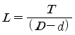
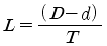
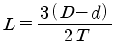
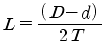
(정답률: 47%)
18. 연삭숫돌의 결합제를 다이아몬드로 사용하는 것은?
- 탄성 숫돌바퀴
- 금속질의 숫돌바퀴
- 비트리파이드 숫돌바퀴
- 실리케이트 숫돌바퀴
(정답률: 43%)
19. 기어의 치형을 만드는 일반적인 방법이 아닌 것은?
- 총형커터에 의한 방법
- 형판에 의한 방법
- 창성에 의한 방법
- 브로치에 의한 방법
(정답률: 45%)
20. 주축을 이동시키면서 대형의 공작물을 가공하기에 편리한 드릴링 머신은?
- 탁상 드릴링머신
- 직립 드릴링머신
- 다축 드릴링머신
- 레이디얼 드릴링머신
(정답률: 44%)
21. 절삭 공구재료의 구비조건으로 틀린 것은?
- 내마모성이 클 것
- 형상을 만들기 쉬울 것
- 고온에서 경도가 낮고 취성이 클 것
- 피삭재보다 단단하고 인성이 있을 것
(정답률: 76%)
22. 삼각법을 이용하여 각도의 측정이나 기울기를 측정하는 것은?
- 전기 마이크로미터
- 사인바
- 게이지 블록
- 공기 마이크로미터
(정답률: 77%)
23. 하향 밀링(내려깍기)에 대한 설명으로 틀린 것은?
- 밀링 커터 날의 마멸이 적고 수명이 길다.
- 날 하나 마다의 날자리 간격이 짧고 가공면이 깨끗하다.
- 커터의 절삭방향과 이송방향이 반대이다.
- 커터 날이 밑으로 향하여 절삭하므로 일감의 고정이 간편하다.
(정답률: 61%)
24. 칩의 형성에서, 일감이 연하고 인성이 큰 재질을, 윗면 경사각이 큰 공구로 절삭깊이를 작게하고 높은 절삭속도에서 절삭제를 사용하는 경우에 잘 생기는 것은?
- 전단형 칩
- 경작형 칩
- 유동형 칩
- 균열형 칩
(정답률: 64%)
25. 길이 측정기가 아닌 것은?
- 버니어 캘리퍼스
- 그루브 마이크로미터
- 콤비네이션 세트
- 전기 마이크로 미터
(정답률: 73%)
3과목: 기계제도
26. 그림과 같은 ∅ 50H7-r6 끼워맞춤에서 최소 죔새는 얼마인가?
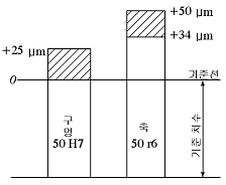
- 0.009
- 0.025
- 0.034
- 0.⑤
(정답률: 59%)
27. 다음 중 나사 간략 도시 방법에서 골을 표시하는 선의 종류는?
- 굵은 실선
- 굵은 일점쇄선
- 가는 실선
- 가는 일점쇄선
(정답률: 63%)
28. 기하 공차의 기호 중 동심도를 나타낸 것은?
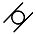
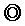
(정답률: 80%)
29. 베어링의 호칭이 6026이다. 안지름은 몇㎜ 인가?
- 26
- 52
- 100
- 130
(정답률: 79%)
30. 투상도에 사용된 단면도는?
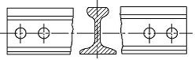
- 부분 단면도
- 온단면도
- 한쪽 단면도
- 회전 도시 단면도
(정답률: 62%)
31. “6구멍”과 같이 형체의 공차에 연관시켜 지시할 때 올바른 기입 방법은?
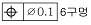
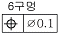
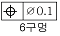
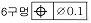
(정답률: 42%)
32. 서피스 모델링(surface modeling)의 특징을 설명한 것 중 옳지 않은 것은?
- 복잡한 형상의 표현이 가능하다.
- 단면도를 작성할 수 없다.
- 물리적 성질을 계산하기가 곤란하다.
- NC가공 정보를 얻을 수 있다.
(정답률: 57%)
33. 공학적인 해석을 할 때 사용되는 여러 가지 물리적 성질(무게중심, 관성모멘트 등)을 제공할 수 있는 모델링 은?
- 솔리드 모델링
- 서피스 모델링
- 와이어 프레임 모델링
- 시스템 모델링
(정답률: 74%)
34. 컴퓨터에서 중앙처리 장치의 구성이라 볼 수 없는 것은?
- 제어장치
- 주기억장치
- 연산장치
- 입출력장치
(정답률: 78%)
35. 다음 그림과 같은 치수기입 방법은?
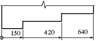
- 직렬 치수 기입법
- 병렬 치수 기입법
- 누진 치수 기입법
- 좌표 치수 기입법
(정답률: 62%)
36. 단면도의 해칭 방법에서 틀린 것은?
- 조립도에서 인접하는 부품의 해칭은 선의 방향 또는 각도를 바꾸어 구별한다.
- 절단면적이 넓을 경우에는 외형선을 따라 적절히 해칭을 한다.
- 해칭면에 문자, 기호 등을 기입할 경우 해칭을 중단해서는 안된다.
- KS규격에 제시된 재료의 단면 표시기호를 사용할 수 있다.
(정답률: 67%)
37. 물체의 한 면이 경사진 경우 경사면에 평행한 별도의 투상도를 나타내는데 이렇게 그려진 투상도의 명칭은?
- 회전 투상도
- 보조 투상도
- 부분 투상도
- 국부 투상도
(정답률: 66%)
38. 그림에서 면의 지시기호에 대한 설명으로 옳지 않은 것은?
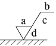
- a - 기준길이
- b - 가공방법
- c - 컷 오프값
- d - 줄무늬 방향 기호
(정답률: 70%)
39. 스프로킷 휠의 도시방법으로 적절한 것은?
- 바깥지름 - 굵은 실선
- 피치원 - 가는 실선
- 이뿌리원 - 가는 1점 쇄선
- 축직각 단면으로 도시할 때 이뿌리선 - 굵은 파선
(정답률: 64%)
40. 기계 구조용 탄소 강재를 나타내는 재료 표시기호 SM20C에 대한 설명 중 틀린 것은?
- S는 강(Steel)을 나타낸다.
- M은 기계 구조용을 나타낸다.
- 20은 탄소 함유량이 15~25%의 중간값을 나타낸다.
- C는 탄소를 의미한다.
(정답률: 62%)
41. 축의 도시법에 대한 설명 중 틀린 것은?
- 축은 길이 방향으로 절단하여 온 단면도로 도시한다.
- 긴 축은 중간을 파단하여 짧게 그리고 치수는 실제 치수를 기입한다.
- 축에 빗줄 널링을 표시할 경우에는 축선에 대하여 30°로 엇갈리게 그린다.
- 축의 키 홈은 부분 단면하여 나타낼 수 있다.
(정답률: 71%)
42. 대칭인 물체의 외부와 내부를 동시에 볼 수 있도록 물체의 1/4을 절단하여 나타내는 단면도는?
- 부분 단면도
- 온단면도
- 한쪽 단면도
- 회전 도시 단면도
(정답률: 71%)
43. 수나사의 호칭은 무엇을 기준으로 하는가?
- 유효 지름
- 골지름
- 바깥지름
- 피치
(정답률: 72%)
44. 관용 테이퍼 수나사의 ISO 규격의 기호는?
- R
- M
- G
- E
(정답률: 68%)
45. 도면이 구비해야 할 기본 요건을 잘못 설명한 것은?
- 대상물의 도형과 함께 필요로 하는 구조, 조립상태, 치수, 가공법 등의 정보를 포함하여야 한다.
- 애매한 해석이 생기지 않도록 표현상 명확한 뜻을 가져야 한다.
- 무역 및 기술의 국제교류의 입장에서 국제성을 가져야 한다.
- 제품의 가격 정보를 항상 포함하여야 한다.
(정답률: 88%)
46. 스퍼 기어의 모듈이 2 이고 기어의 잇수가 30인 경우 피치원의 지름은 몇㎜ 인가?
- 15
- 32
- 60
- 120
(정답률: 82%)
47. 기계요소 중에서 길이 방향으로 절단하여 단면을 표시할수 있는 것은?
- 기어의 이, 바퀴의 암
- 베어링, 부시
- 볼트, 작은 나사
- 리벳, 키
(정답률: 53%)
48. 다음 중 억지 끼워 맞춤은?
- H7/h6
- F7/h6
- G7/h6
- H7/p6
(정답률: 66%)
49. 스퍼기어 제도시 축방향에서 본 도면의 이뿌리원은 어느 선으로 나타내는가?
- 가는실선
- 굵은 1점쇄선
- 가는 1점쇄선
- 가는 2점쇄선
(정답률: 62%)
50. 다음은 나사의 표시방법이다. 설명으로 틀린 것은?
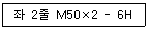
- 2줄 왼나사이다.
- 미터 가는 나사이다.
- 유니파이 나사를 의미한다.
- 6H는 나사의 등급을 의미한다.
(정답률: 78%)
51. CAD 시스템에서 그려진 도면요소를 용지에 출력하는 장치는?
- 모니터
- 플로터
- 음극선관
- 디지타이저
(정답률: 81%)
52. 다음 선의 종류 중 가는 실선을 사용하지 않는 것은?
- 지시선
- 치수 보조선
- 해칭선
- 피치선
(정답률: 72%)
53. 다음은 계기의 도시기호를 나타낸 것이다. 압력계를 나타낸 것은?
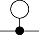
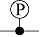
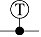
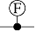
(정답률: 77%)
54. 다음은 관의 장치도를 단선으로 표시한 것이다. 체크밸브를 나타내는 기호는 어느 것인가?
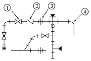
- ①
- ②
- ③
- ④
(정답률: 75%)
55. 도면에 반드시 마련해야 할 양식이 아닌 것은?
- 윤곽선
- 비교눈금
- 표제란
- 중심마크
(정답률: 75%)
56. 다음 치수 보조 기호의 사용 방법이 올바른 것은?
- ø : 구의 지름 치수 앞에 붙인다.
- R : 원통의 지름 치수 앞에 붙인다.
- □ : 정사각형의 한 변의 치수 수치 앞에 붙인다.
- SR : 원형의 지름 치수 앞에 붙인다.
(정답률: 64%)
57. 피치가 1.25㎜인 한 줄 나사 볼트를 5바퀴 돌렸다. 이 때 볼트가 전진한 거리는 얼마인가?
- 1.25㎜
- 6.25㎜
- 2.50㎜
- 5.0㎜
(정답률: 87%)
58. 어떤 구멍의 치수
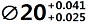
에 대한 설명으로 틀린 것은?- 구멍의 기준치수는 ø20 이다.
- 구멍의 위치수 허용차는 +0.041이다.
- 최대 허용 한계 치수는 ø20.041이다.
- 구멍의 공차는 0.066이다.
(정답률: 66%)
59. 코일 스프링의 제도 원칙 설명으로 틀린 것은?
- 스프링은 원칙적으로 하중이 걸린 상태로 도시한다.
- 하중과 높이 또는 휨과의 관계를 표시할 필요가 있을 때는 선도 또는 요목표에 표시한다.
- 특별한 단서가 없는 한 모두 오른쪽 감기로 도시한다.
- 스프링의 종류와 모양만을 도시할 때에는 재료의 중심선만을 굵은 실선으로 그린다.
(정답률: 69%)
60. 보기와 같이 숫자를 □속에 기입하는 이유는?
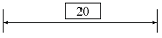
- 이론적으로 정확한 치수를 표시
- 주조의 가공을 위한 치수를 표시
- 정정이 가능하도록 임시로 치수를 표시
- 가공 여유를 주기 위하여 치수를 표시
(정답률: 81%)